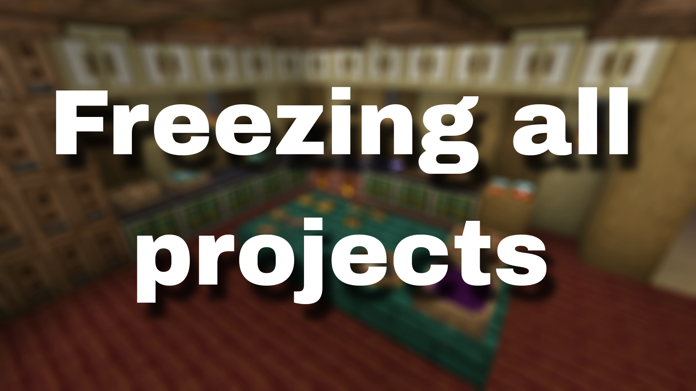

<!DOCTYPE html>
<html lang="en">
<head>
  <link rel="icon" href="../img/themes/active/favicon.png">
  <title>Freezing all projects | Blog | Donne431</title>
  <meta name="viewport" content="width=device-width, initial-scale=1, maximum-scale=1" />
  <meta name="title" content="Freezing all projects | Blog | Donne431">
  <meta name="description" content="Welcome to my website! I am Donne431, just a guy, who love made a modifications for games. I'm 16 years old, and I'm from Crimea, Russia (demi-island washed by the Black and Azov Sea). I also like to create almost any content for Minecraft, that is: mods, maps, resource packs, servers.">
  <meta name="keywords" content="Minecraft, Forts, Mods, Resourcepacks, Datapacks, Donne431">
  <meta name="theme-color" content="#4bb4f1">


  <script src="https://code.jquery.com/jquery-3.3.1.min.js"></script>
  <script src="https://cdn.jsdelivr.net/npm/handlebars@latest/dist/handlebars.js"></script>
  <script src="https://mcapi.us/scripts/minecraft.min.js"></script>
  <script src="../js/main.js"></script>
  <script src="../js/lang.js"></script>
  <script src="../config.js"></script>
  <script src="../js/lightbox.min.js"></script>

  <script>tosAgreed = true</script>

  <link rel="stylesheet" href="https://cdnjs.cloudflare.com/ajax/libs/font-awesome/6.7.1/css/all.min.css"/>
  <link rel="stylesheet" href="../css/style.css">
  <link rel="stylesheet" href="../css/blog.css">
  <link rel="stylesheet" href="../config.css">
  <link href="../css/lightbox.css" rel="stylesheet" media="all">

</head>


<body>

  <div id="target"></div>

  <script id="template" type="text/x-handlebars-template">

  <header>
    <div class="hero" id="hero">
      <a><h1 style="padding-top: 3%;"></h1></a>
    <p> </p>
    <div class="news-card" align="center">
      <a href="../" class="btn"><i class="fa-solid fa-house"></i> Home</a>
      <a href="../blog" class="btn"><i class="fa-solid fa-newspaper"></i> Blog</a>
      <a href="#links" class="btn" data-translate-key="universal.links"><i class="fa-solid fa-share"></i> Links</a>
    </div>
    <p> </p>
    </div>
  </header>

  <section class="dark" id="blog">
    <h1><i class="fa-solid fa-newspaper"></i> Blog</h1>
    <div id="news">
    <div class="news-card" align="center">
    <a>MISC</a><br>
    <a href="../img/blog/freezing-all-projects/preview.png" data-lightbox="roadtrip"></a>
    <h1 align="center">Freezing all projects</h1>
    <i>24.05.2025, 12:40</i><br>
    </div>
    <p>
    Hello to all the readers of this post!<br><br>

    Unfortunately, I have to temporarily pause work on all my projects for about one week. I have important exams scheduled during this period and this is a forced measure. <br> <br>
    
    Why did I decide to pause and announce this? It's simple - so that I'm not tempted to keep working and not get distracted. I haven't studied enough for exams over the past year due to laziness, and now that I'm only a week away from taking them, I need to maximize my focus. One way to accomplish this is to eliminate all distractions other than studying for exams. This approach may seem strange to some, but for me it's the only way to keep myself focused. <br> <br>
    
    To finish up, I've been working on an update for  Ice and Fire Delight and I can say that it will POSSIBLY be the biggest update in the mod's history and will overtake 0.2.3, but I'm not sure about that, maybe some of the content will be cut or unfinished, so I can't say for sure.

    
    <!--
    Привет всем читателям этого поста! <br> <br>
    
    К сожалению, я вынужден временно приостановить работу над всеми своими проектами на примерно одну неделю. В этот период у меня запланированы важные экзамены, и это вынужденная мера. <br> <br>
    
    Почему я решил сделать паузу и сообщить об этом? Всё просто — чтобы не соблазняться продолжать работу и не отвлекаться. За последний год я недостаточно готовился к экзаменам из-за лени, и теперь, когда до сдачи осталось всего неделя, мне нужно максимально сосредоточиться. Один из способов добиться этого — исключить все отвлекающие занятия, кроме подготовки к экзаменам. Для некоторых такой подход может показаться странным, но для меня он единственный способ заставить себя сосредоточиться. <br>
    
    Под конец скажу, что до паузы, я работал над обновлением для  Ice and Fire Delight и могу заявить, что оно ВОЗМОЖНО станет самым крупным обновлением за историю мода и тем самым обгонит 0.2.3, но я не уверен в этом, возможно часть контента будет вырезана или недоделана, поэтому утверждать навернека не могу.
   
    -->


    </p>
    <p align="center"><i class="fa-solid fa-user"></i> Donne431 (Author)</p>
    </div>
  </section>
  <section class="dark">
    <div class="news-card" align="center">
    <a href="../blog/iafd-curseforge-100k.html" class="btn2"><i class="fa-solid fa-arrow-left"></i> Previous post</a>
    <a href="../blog" class="btn2"><i class="fa-solid fa-newspaper"></i> Back to Blog</a>
    <a href="../blog/unfreezing-projects_01.06.2025.html" class="btn2"><i class="fa-solid fa-arrow-right"></i> Next post</a>
    </div>
  </section>

  <section class="light">
    <h1 data-translate-key="universal.links"><i class="fa-solid fa-share"></i> Links</h1>
    <div id="links" align="center">
      <a href="https://discord.gg/NQBhQRDEhF"></a>
      <a href="https://www.curseforge.com/members/donne431/projects"></a>
      <a href="https://modrinth.com/user/Donne431"></a>
      <a href="https://github.com/Donne431"></a>
      <a href="https://www.donationalerts.com/r/donne431"></a>
    </div>
  </section>

  <footer>
    <a>&copy; {{server_port}} {{server_name}}. All Rights Reserved.</br>{{server_name}} is not affiliated with or endorsed by Mojang Studios or Microsoft<br>{{server_ip}}</a>
    <a></a>
    
  </footer>
  </script>
  <script src="../js/license.js"></script>

</body>
</html>
